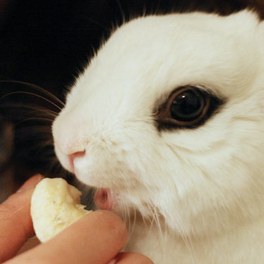
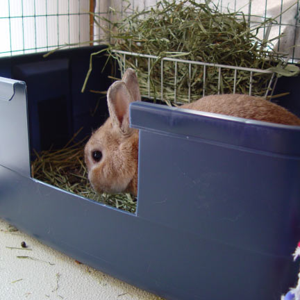
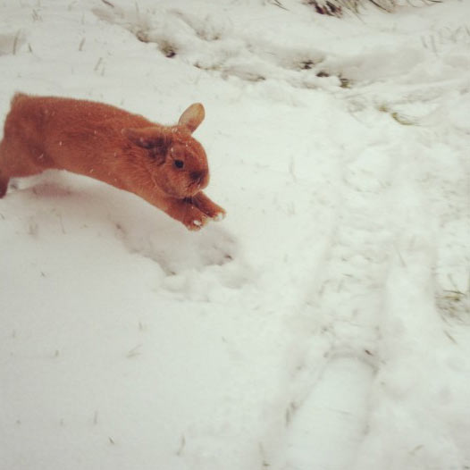

Banana

Bunnies are sweet-tooths, and they love banana. Fresh banana and banana chips are great. However, bananas should not be given to a rabbit with a high frequency. Again, bunnies have sensitive tummies, and bananas should be special treats, given only at special times.
Potty trained

Bunnies can totally be litter-trained. By nature, rabbits pick one place where they like to do their "business." Your bunny will essentially tell you where you should put the litterbox. Just keep it clean, spacious and place lots of hay around it as an incentive. Pelleted litter tends to work better for rabbits, especially paper-based pellets.
Snow

Bunnies can totally go outside, they love to explore. Just be sure you are supervising them. Some bunnies even love exploring in the snow. Do be careful, bunnies should not live outside 100% of the time if weather is too drastic. Playtime is okay, but in moderation.